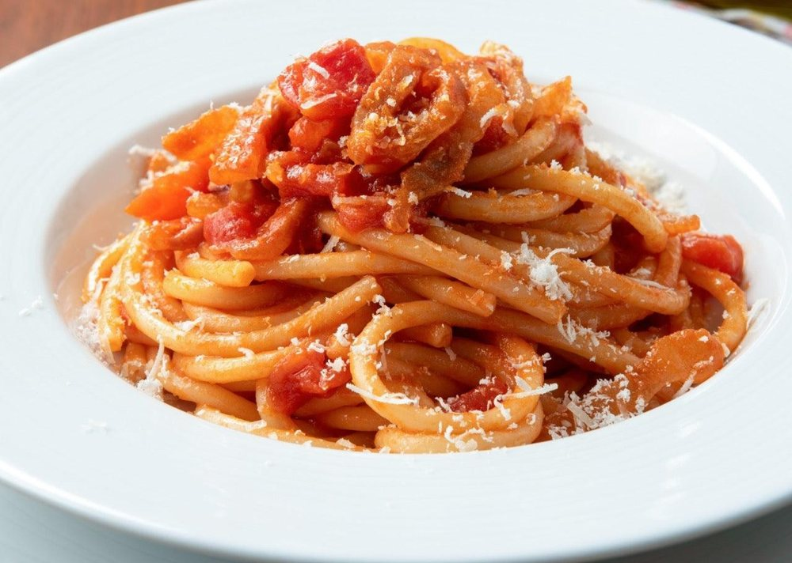

Massas
Molho à amatriciana

Ingredientes
- 2 colheres (sopa) de azeite de oliva
- ½ xícara de bacon picado
- 2 cebolas raladas
- 4 dentes de alho
- 1 cenoura ralada
- 1 kg de tomates
- 1 ramo de tomilho
- 1 folha de louro
- 1 amarrado de salsa e cebolinha verde
- 2 xícaras de água fervente
- Sal e pimenta-do-reino a gosto
- 2 colheres (sopa) de extrato de tomate
- ½ xícara de creme de leite
Modo de preparo
- Numa panela grande, aqueça o azeite e doure o bacon.
- Acrescente as cebolas e o alho descascado e amassado. Junte a cenoura e refogue.
- Adicione os tomates sem pele e sem sementes, picados, o tomilho, o louro e o amarrado de salsa e cebolinha. Cozinhe em fogo brando até os tomates se desmancharem (junte a água fervente à medida que o molho for secando).
- Tempere com sal e pimenta a gosto. Acrescente o extrato de tomate, verifique o tempero e, se for necessário, junte mais sal.
- Retire o amarrado de salsa, o louro e o tomilho, deixe esfriar completamente e congele.
Observação
Lembre-se de usar pouco sal, pois o congelamento aumenta o sabor dos temperos; depois de reaquecer, verifique o tempero e sirva. Congelamento: coloque o molho já frio em um recipiente rígido que possa ir ao freezer, ou em potes de polietileno; retire o ar, feche bem, etiquete e leve ao freezer (se preferir, direto num saco plástico que feche hermeticamente). Descongelamento: na geladeira de um dia para o outro; ponha numa panela e leve ao fogo brando, em banho-maria; aqueça e junte o creme de leite mexendo bem, sem deixar ferver.